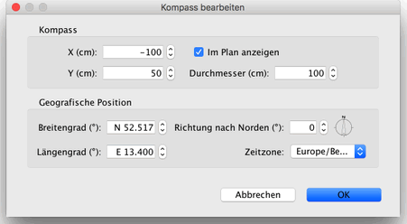

| Den Kompass und die geografische Position bearbeiten | |||
In jeder neuen Wohnung wird ein Kompass links oben im Wohnungsplan angezeigt. Er kann genau wie andere Elemente im Wohnungsplan durch Klicken und Ziehen oder Selektieren und anschließende Benutzung der Pfeiltasten auf der Tastatur bewegt werden. Wenn der Kompass das einzige selektierte Element im Wohnungsplan darstellt, können Sie seine Größe ändern und festlegen, in welcher Richtung der Norden liegt, indem Sie die am Kompass angezeigten Anfasser ziehen.
|

|
Wenn der Mauszeiger über einem dieser Anfasser ist, ändert er sich, um die Möglichkeit einer Ziehoperation an diesem Punkt anzuzeigen. Der Kompass und die geografische Position Ihrer Wohnung können auch über den Dialog Kompass bearbeiten bearbeitet werden. Dieser erscheint sobald der Kompass im Wohnungsplan doppelt angeklickt wird, kann aber auch über den Menüeintrag Plan > Kompass bearbeiten… erreicht werden.  Im Dialog Kompass bearbeiten können die Position, der Durchmesser sowie die Ausrichtung des Kompasses nach Norden eingestellt werden. Außerdem kann der Kompass dort auch aus- und eingeblendet werden. Die geografische Position kann in Form des Längen- und Breitengrads sowie der Zeitzone am gewünschten Ort eingestellt werden. |
|